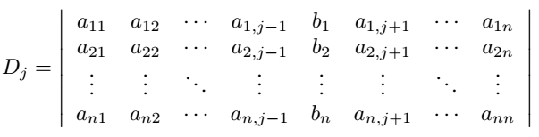
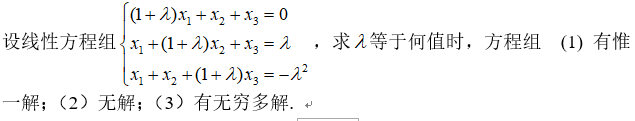

期末复习啊啊啊呜呜呜
最基本的知识点
1.行列式解方程组
1.1克莱默法则
用来解线性方程组
$$
Ax=b\
写成(a_1,a_2,\cdots,a_n)x=b,\quad a_n为列向量
$$
设A的行列式为D，
若D = 0，则方程组无解或有无数组解
若D不为0，则线性方程组有唯一解，其解为
$$
x_j=\frac{D_j}{D},\quad j=1,2,\cdots,n \ \
其中D_j=(a_1,a_2,\cdots,a_j-1,b,a_j+1,\cdots,a_n)
$$

1.2线性方程组的解
行空间与与零空间互补
从行列式的角度来说，如果行列式不为零，那么有唯一解；如果行列式等于零，有可能无解，也有可能有无数组解。
例如：

其行列式的值为
$$
\lambda^2(\lambda+3)\\
当\lambda=0时，有无穷多解\
当\lambda=-3时，无解
$$
2.逆矩阵的求法
2.1定义法
利用待定系数的方法求解，例如：
$$
有矩阵A = \begin{bmatrix}1&2\-1&-3 \end{bmatrix},\quad
设它的逆为A^{-1}=\begin{bmatrix}a&b\c&d \end{bmatrix}\\
那么，根据定义AA^{-1}=I,\quad解方程组即可
$$
二阶矩阵要解4个方程，三阶矩阵要解9个方程，四阶矩阵要解16个方程……
可以看出此方法的局限性，也就解个二阶矩阵用用
2.2伴随矩阵法
伴随矩阵是由原矩阵各项的代数余子式组成的
代数余子式：
$$
A=
\begin{bmatrix}
a_{11}&a_{12}&\cdots&a_{1n}\
a_{21}&a_{22}&\cdots&a_{2n}\
\vdots&\vdots&\ddots&\vdots\
a_{n1}&a_{n2}&\cdots&a_{nn}
\end{bmatrix}\\
a_{ij}的代数余子式为\quad(-1)^{i+j}
\left|\begin{matrix}
a_{11}&a_{12}&\cdots&a_{1,j-1}&a_{1,j+1}&\cdots&a_{1n}\
a_{21}&a_{22}&\cdots&a_{2,j-1}&a_{2,j+1}&\cdots&a_{2n}\
\vdots&\vdots&\ddots&\vdots&\vdots&\ddots&\vdots\
a_{i-1,1}&a_{i-1,2}&\cdots&a_{i-1,j-1}&a_{i-1,j+1}&\cdots&a_{i-1,n}\
a_{i-1,1}&a_{i-1,2}&\cdots&a_{i-1,j-1}&a_{i-1,j+1}&\cdots&a_{i-1,n}\
\vdots&\vdots&\ddots&\vdots&\vdots&\ddots&\vdots\
a_{n1}&a_{n2}&\cdots&a_{n,j-1}&a_{n,j+1}&\cdots&a_{nn}
\end{matrix}\right|\\
例如a_{22}的代数余子式为\quad(-1)^{2+2}
\left|\begin{matrix}
a_{11}&a_{13}&\cdots&a_{1n}\
a_{31}&a_{33}&\cdots&a_{3n}\
\vdots&\vdots&\ddots&\vdots\
a_{n1}&a_{n3}&\cdots&a_{nn}
\end{matrix}\right|
$$
伴随矩阵:
把每一项都求代数余子式，再把所得的值替换掉原来的项就得到了新矩阵，把这个新矩阵再转置，就得到了伴随矩阵A*。
求逆：
$$
A^{-1}=\frac{A^*}{|A|}
$$
不可不谓之暴算，等我大汗淋漓求出此逆之时，早就收卷了
2.3初等变换法
把要求逆的矩阵的右边拼上一个单位阵，进行初等行变换，使得单位阵变到左边，剩下右边的为原矩阵的逆。
$$
A=
\begin{bmatrix}
a_{11}&a_{12}&\cdots&a_{1n}\
a_{21}&a_{22}&\cdots&a_{2n}\
\vdots&\vdots&\ddots&\vdots\
a_{n1}&a_{n2}&\cdots&a_{nn}
\end{bmatrix}\\
取A_1=[A,I_n]\
A_1=
\begin{bmatrix}
a_{11}&a_{12}&\cdots&a_{1n}&1&0&\cdots&0\
a_{21}&a_{22}&\cdots&a_{2n}&0&1&\cdots&0\
\vdots&\vdots&\ddots&\vdots&\vdots&\vdots&\ddots&\vdots\
a_{n1}&a_{n2}&\cdots&a_{nn}&0&0&\cdots&1
\end{bmatrix}
$$
然后，通过行化简，化为：
$$
A_2=[I_n,A^{-1}]\\
A_2=
\begin{bmatrix}
1&0&\cdots&0&a’{11}&a’{12}&\cdots&a’{1n}\
0&1&\cdots&0&a{21}&a’{22}&\cdots&a’{2n}\
\vdots&\vdots&\ddots&\vdots&\vdots&\vdots&\ddots&\vdots\
0&0&\cdots&1&a’{n1}&a’{n2}&\cdots&a’_{nn}
\end{bmatrix}\\
右侧的部分就是A的逆A^{-1}
$$
爱了，爱了
3.分块矩阵
3.1加法与数乘与乘法
与普通矩阵的运算法则一致
3.2转置
类比分步求导，先以各分块为单位作转置，再把各分块内部取转置。
例：
$$
A =
\begin{bmatrix}
A_{11}&A_{12}\
A_{21}&A_{22}
\end{bmatrix}\\
A^T=
\begin{bmatrix}
A_{11}^T&A_{21}^T\
A_{12}^T&A_{22}^T
\end{bmatrix}
$$
3.3分块上三角矩阵的逆
$$
A =
\begin{bmatrix}
A_{11}&A_{12}\
O&A_{22}
\end{bmatrix}\\
A^T=
\begin{bmatrix}
A_{11}^{-1}&-A_{11}^{-1}A_{12}A_{22}^{-1}\
O&A_{22}^{-1}
\end{bmatrix}
$$
软工大一学的到此为止，上网一查直接吓坏了
还有秩……
4.向量线性相关和线性无关
4.1基的变换
$$
设B{b_1,b_2,\cdots,b_n}和C{c_1,c_2,\cdots,c_n}都是向量空间V的基，则存在一个n\times n的矩阵\underset{C\leftarrow B}{P}使得\\
[x]_C =\underset{C\leftarrow B}{P} [x]_B\\
其中，变换矩阵\underset{C\leftarrow B}{P} 的列向量是基B中的向量对应在C坐标下的向量，即\\
\underset{C\leftarrow B}{P}=[\quad[b_1]_C\quad[b_2]_C\quad\cdots\quad[b_3]_C\quad]\\
因为\underset{C\leftarrow B}{P}是可逆的，所以(\underset{C\leftarrow B}{P})^{-1}=
\underset{B\leftarrow C}{P}
$$
为了实现两个非标准基之间的变换，我们需要原来的基关于新的基的坐标变换。
什么？我是谜语人？看例子
例一：已知变换矩阵求基
$$
对于一个向量空间V，考虑两个基B{b_1,b_2},C{c_1,c_2},满足\
b_1=4c_1+c_2,\quad b_2=-6c_1+c_2\\
已知[x]_B=
\begin{bmatrix}
3\1
\end{bmatrix}
,求[x]_C\\
解：因为[x]_B=
\begin{bmatrix}
3\1
\end{bmatrix}，\quad
所以x = 3b_1+b_2\
所以，[x]_C=[3b_1+b_2]_C\
=3[b_1]_C+[b_2]_C\
=[[b_1]_C\quad[b_2]_C]
\begin{bmatrix}
3\1
\end{bmatrix}\\
又因为，b_1=4c_1+c_2,\quad b_2=-6c_1+c_2\
所以，[b_1]_C=
\begin{bmatrix}
4\1
\end{bmatrix},
[b_2]_C=
\begin{bmatrix}
-6\1
\end{bmatrix}\\
所以，[x]_C=
\begin{bmatrix}
4&-6\1&1
\end{bmatrix}
\begin{bmatrix}
3\1
\end{bmatrix}=
\begin{bmatrix}
6\4
\end{bmatrix}
$$
例二：已知基求变换矩阵
$$
对于一个向量空间V，考虑两个基B{b_1,b_2},C{c_1,c_2}，\
已知b_1=
\begin{bmatrix}
-9\1
\end{bmatrix},
b_2=
\begin{bmatrix}
-5\-1
\end{bmatrix},
c_1=
\begin{bmatrix}
1\-4
\end{bmatrix},
c_2=
\begin{bmatrix}
3\-5
\end{bmatrix},
求变换矩阵\underset{C\leftarrow B}{P}\\
写出系数矩阵[c_1\quad c_2\quad b_1\quad b_2]=
\begin{bmatrix}
1&3&-9&-5\
-4&-5&1&-1
\end{bmatrix}\
行化简得
\begin{bmatrix}
1&0&6&4\
0&1&-5&-3
\end{bmatrix}\
所以\underset{C\leftarrow B}{P}=
\begin{bmatrix}
6&4\
-5&-3
\end{bmatrix}
$$
4.2施密特正交化
4.2.1.定义
施密特正交化（Schmidt orthogonalization）是求欧氏空间正交基的一种方法。从欧氏空间任意线性无关的向量组α1，α2，……，αm出发，求得正交向量组β1，β2，……，βm，使由α1，α2，……，αm与向量组β1，β2，……，βm等价，再将正交向量组中每个向量经过单位化，就得到一个标准正交向量组，这种方法称为施密特正交化。
4.2.2.计算
以此矩阵为例
$$
\begin{matrix}
1&0&0\
1&1&0\
1&1&1\
1&1&1\
\end{matrix}
$$
将矩阵写为无关向量组的形式，一般取列向量组a1，a2，……，am
$$
a_1 = \begin{bmatrix}1\1\1\1 \end{bmatrix},
a_2 = \begin{bmatrix}0\1\1\1 \end{bmatrix},
a_3 = \begin{bmatrix}0\0\1\1 \end{bmatrix}
$$
正交化：
$$
b_1=a_1\
b_2 = a_2-\frac{<a_2,b_1>}{<b_1,b_1>}b_1\
b_3 = a_3 - \frac{<a_3,b_1>}{<b_1,b_1>}b_1 - \frac{<a_3,b_2>}{<b_2,b_2>}b_2\
…\
b_n = a_n - \frac{<a_n,b_1>}{<b_1,b_1>}b_1 - \frac{<a_n,b_2>}{<b_2,b_2>}b_2 - …-\frac{<a_n,b_{n-1}>}{<b_{n-1},b_{n-1}>}b_{n-1}\
$$
注：
$$
<a,b>表示向量内积，即点乘
$$
例中：
$$
b_1= a_1 = \begin{bmatrix}1\1\1\1 \end{bmatrix}\
b_2 = a_2-\frac{<a_2,b_1>}{<b_1,b_1>}b_1 =a_1-\frac{3}{4}b_1=\begin{bmatrix}-3\1\1\1 \end{bmatrix}\
b_3 = a_3 - \frac{<a_3,b_1>}{<b_1,b_1>}b_1 - \frac{<a_3,b_2>}{<b_2,b_2>}b_2=a_3-\frac{1}{2}b_1-\frac{1}{6}b_2=\begin{bmatrix}0\-2\1\1 \end{bmatrix}\
$$
单位化：
$$
\varepsilon_n = \frac{b_n}{||b_n||},\
标准正交基为{\varepsilon_1,\varepsilon_2,…,\varepsilon_n}
$$
例中：
$$
\varepsilon_1 = \frac{b_1}{||b_1||}=\begin{bmatrix}\frac{1}{2}\\frac{1}{2}\\frac{1}{2}\\frac{1}{2} \end{bmatrix},\
\varepsilon_2 = \frac{b_2}{||b_2||} = \begin{bmatrix}-\frac{\sqrt{3}}{2}\\frac{\sqrt{3}}{6}\\frac{\sqrt{3}}{6}\\frac{\sqrt{3}}{6} \end{bmatrix},\
\varepsilon_3 = \frac{b_3}{||b_1||} = \begin{bmatrix}0\-\frac{\sqrt{6}}{3}\\frac{\sqrt{6}}{6}\\frac{\sqrt{6}}{6} \end{bmatrix}\
$$
4.2.3.不唯一
正交化的向量组不唯一. 按施密特正交化过程, 我们将向量组中的向量打乱顺序得到的向量组也不一样，标准正交基也不是唯一的.
5.等价、相似、合同
矩阵等价
$$
若存在可逆阵P和Q，使得B=PAQ，则称矩阵A与B等价，记作A\cong B
$$
充要条件：A和B的秩相等
矩阵合同
$$
若存在可逆阵P，使得B=P^TAP，则称矩阵A与B合同，记作A\underset{-}{\sim} B
$$
矩阵相似
$$
若存在可逆阵P，使得B=P^{-1}AP，则称矩阵A与B相似，记作A\sim B
$$
三者关系：
$$
A\underset{-}{\sim} B\Rightarrow A\cong B\\
A\sim B\Rightarrow A\cong B\
反之，均不成立
$$
一般而言，相似与合同没有关系。但是，正交相似与正交合同是同一回事。而且实对称矩阵一定与对角阵合同。
7.特征值特征向量
定义：
$$
A是n阶方阵，\lambda是一个数字，若存在非零向量\alpha，使得A\alpha=\lambda\alpha,
则称\lambda为特征值，非零向量\alpha为矩阵A对应与特征值\lambda的特征向量。
$$
求法：
$$
满足|A-\lambda E|=O的数\lambda为特征值\\
方程组(A-\lambda E)X=O的非零解或基础解系为特征向量
$$
例：
$$
求矩阵A=
\begin{bmatrix}
1&-2&2\
-2&-2&4\
2&4&-2\
\end{bmatrix}的特征值，特征向量\\
\left|\begin{matrix}
1-\lambda&-2&2\
-2&-2-\lambda&4\
2&4&-2-\lambda\
\end{matrix}\right|\\
=\cdots=-\lambda^3-3\lambda^2+24\lambda-28\\
猜根，根往往是常数项的因子，\\
解得，上式=-(\lambda-2)^2(\lambda+7)\\
\lambda_1=\lambda_2=2，\lambda_3=-7\\
①对于\lambda_1=\lambda_2=2，\
A-2E=
\begin{bmatrix}
-1&-2&2\
-2&-4&4\
2&4&-4\
\end{bmatrix}\sim
\begin{bmatrix}
-1&-2&2\
0&0&0\
0&0&0\
\end{bmatrix}\\\Rightarrow
x_1=-2x_2+2x_3\\
所以，\xi_1=\begin{bmatrix}-2\1\0 \end{bmatrix}，
\xi_1=\begin{bmatrix}2\0\1 \end{bmatrix}\\
特征值为2的全部特征向量为k_1\xi_1+k_2\xi_2\\
②同理可得，\lambda=-7的特征向量\xi_3=\begin{bmatrix}1\2\-2 \end{bmatrix}\\
其全部特征向量为k_3\xi_3\\k_1,k_2,k_3均不为0
$$
性质：
$$
若\lambda是A的特征值，那么：\\
1.A^T的特征值是\lambda\
2.A^{-1}的特征值是\lambda^{-1}\
3.kA的特征值是k\lambda\
4.A^m的特征值是\lambda^m\
5.f(A)的特征值是f(\lambda)\
6.A^*的特征值是\frac{|A|}\lambda\
7.\lambda_1\lambda_2\cdots \lambda_n=|A|\
8.\lambda_1+\lambda_2+\cdots +\lambda_n=a_{11}+a_{22}+\cdots+a_{nn}
$$
8.二次型
化二次型为标准型
(1)把二次型系数写成实对称矩阵
(2)施密特正交单位化
(3)组成变换矩阵，得对角阵，即得标准型
分类
正定、负定，不定
特征值为正，则是正定阵
特征值为负，则是负定阵
特征值既有正的也有负的，则是不定阵
9.QR分解
如果您喜欢此博客或发现它对您有用，则欢迎对此发表评论。 也欢迎您共享此博客，以便更多人可以参与。 如果博客中使用的图像侵犯了您的版权，请与作者联系以将其删除。 谢谢 ！